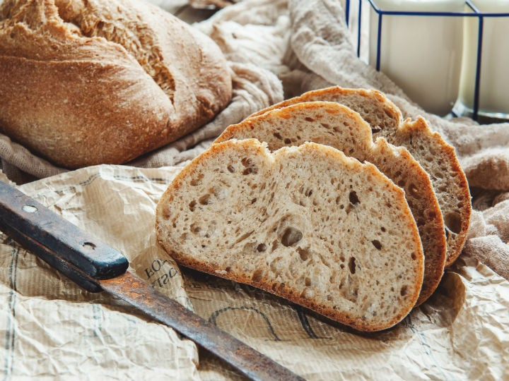
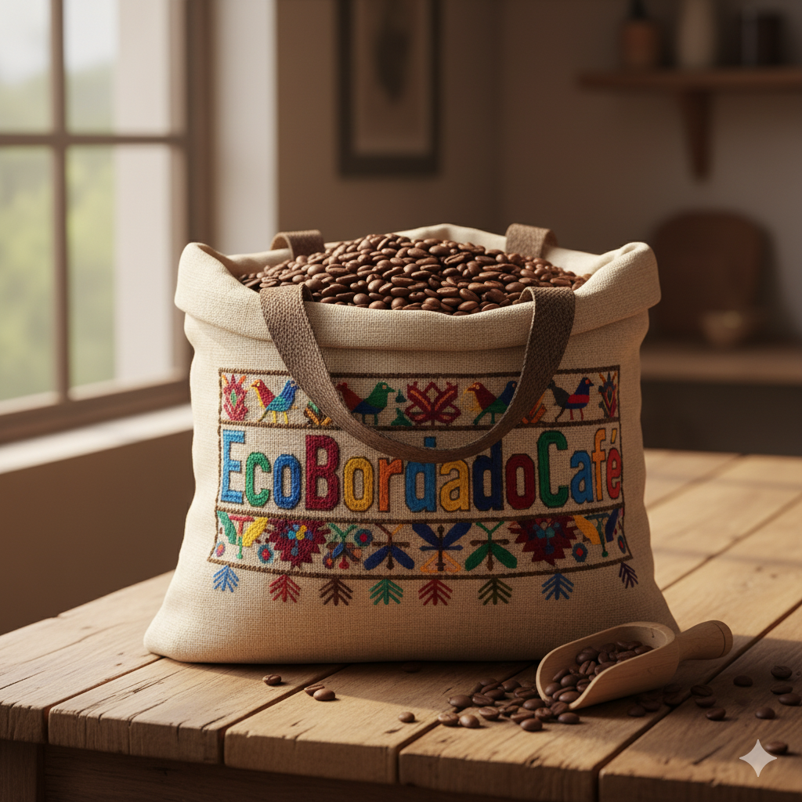

Bebidas
Café artesanal
Café tradicional y bebidas especiales preparados para despertar los sentidos.
Desde $4.000 COP
Cada compra apoya el café artesanal, el talento local y las historias bordadas que hacen única a nuestra comunidad.
Café tradicional y bebidas especiales preparados para despertar los sentidos.
Desde $4.000 COP
Detalles bordados a mano por artesanos de la región, ideales para regalar.
Desde $25.000 COP
Bolsas y piezas especiales que combinan funcionalidad, diseño y cultura.
Consulta disponibilidad
Pan fresco y productos de panadería artesanal para acompañar tu café.
Desde $4.000 COP
Combos, talleres y encuentros para disfrutar el café mientras aprendes y creas.
PróximamenteVisítanos y descubre productos que conectan el sabor del café con la magia del bordado.